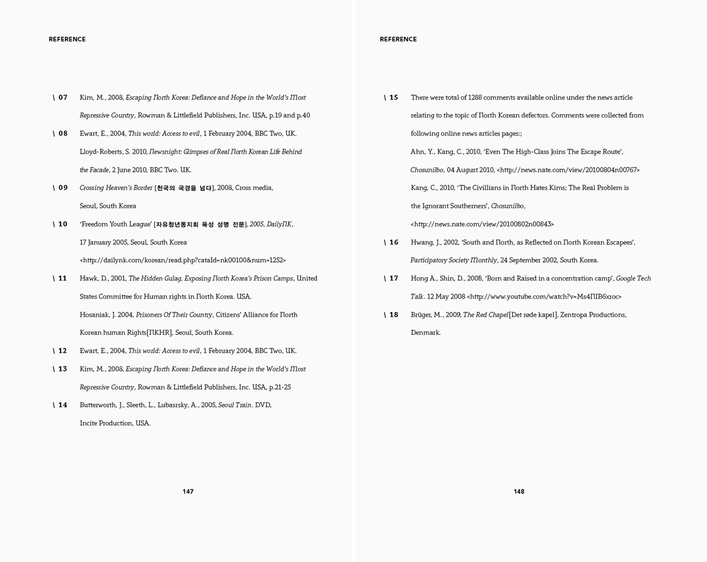
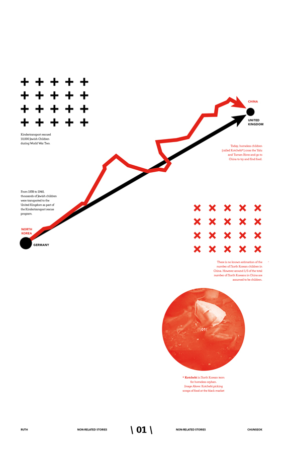
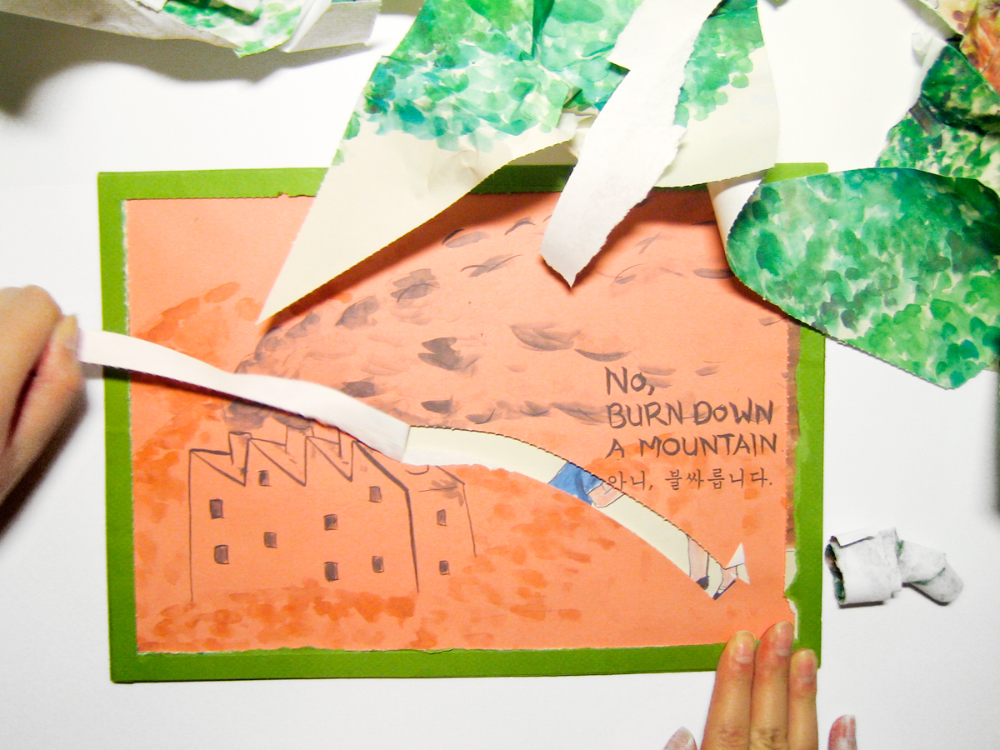
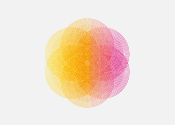

Another: Being on
the Other Side
of the River (2010)
Research, Editing, Layout, Infography, Installation, Video, Digital Print, Risography, 70gsm lion-coat paper
The project 'Another' is designed to engage the general public about the violations of human rights committed against North Koreans. Through the use of a script divided into two books and a supplementary visual reference book, the project aims to create an embodied experience of 'being' North Korean to enhance empathy and understanding. The script itself is a collection of first hand experiences of North Korean escapees.
 
Through 'Another' I have attempted to resonate deep within the audiences' consciousness by asking for a personal and emotional level of engagement. To make this kind of interaction possible, the challenge has been to leave an 'empty' space for the audience to fill. Such emptiness in the design means striping myself back from personal views and visual style to create minimal yet symbolic visuals.
∗ if interested in collaborating to expand this project, please contact me.
La Bella
Figura
Milanese (2008)
Research, Interview, Photography, Layout, Report
Cultural study report, 'La Bella Figura Milanese'[The Milanese Beautiful Figure] explores Milanese society through the Milanese elderly fashion.
In spite of the image of beauty on mass media(where the youth and newness represents the beauty), elders in Milan, dress better than their younger generation and not only that, they dress to express their style.
This attitude reflects the traditional Italian philosophy of La Bella Figura[The Beautiful Figure] but also controverts the preconception of elders being 'old-fashioned' or 'conservative', highlighting the characteristic of the society.
The research included a street-fashion style photography, a short interview and a literature reviews.
Some of the words that the interviewees used to describe their style include:
Classic, As I want, Elegant, Casual, Simple, Normal, Clean, Harmonious, Natural, Chic, Japanese, Sprint, Funny, Unique
Bangkok Elvis (2004)
Font Design
'Bangkok Elvis' is a heavy display font based on Thai script and culture especially around the white elephant myth.
The font comes from my lack of understanding in roman character forms where the forms were rather analysed as images with Asian perspective. There I was able to combine roman forms with Asian symbols such as swastika or flower.
During the course of design of this process, I also learnt that white elephant in Western culture means useless objects rather than holy and mystic creature in Asian (Thai) Buddhist context.
This design process lead the quirky and unconventional font, encompassing both characteristics of serif & san-serif, Roman & Asian, contemporary & traditional.
Eco-(un)-Friendly
Book (2009)

As in the case of developing green energy with corn ethanol causing famine in developing countries, environmental issues involve complications that may result in eco-friendly acts with eco-unfriendly consequences. Environmental issues are commonly talked about yet often talked in superficial level that it seems like hard to see the core of the problem or reflect on whether our eco-friendly acts actually help the problem.
'Eco-(un)-Friendly book' is an attempt to engage the audience with the environmental issues in a new light.
This book requires each pages to be torn off along perforated lines to read through the book. It tells simple story of the production of the paper in an educative yet sarcastic manner with the illustrational style by Tae-hyung Kim (which I've grown up with).
This irony of the book (the book with eco-friendly attempt being disposable) conveys the contextual meaning, providing the audience to reflect on their 'acts' and the irreversible nature of the environment.
UTS
Design
`10 (2010)
Branding, Poster, Invitation, Exhibition, Environmental Design

The branding for the 2010 UTS end of year design show is based on an evolving, pulsating pattern of concentric circles reflecting the interconnected practice of UTS design.
** More images to come after the opening night
Let's be Seriously Serious, Seriously (2010)
Street poster case study, Fake exhibition, Catalogue, Poster, Interaction in Public space